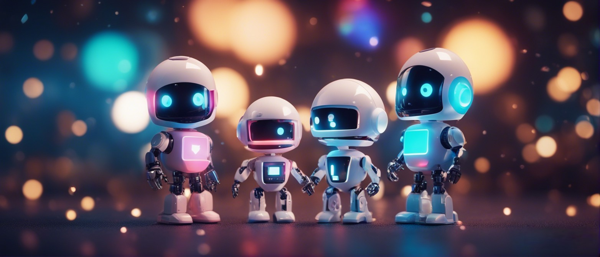

At Starlight Robotics, we believe in the power of discovery and community. Dive into a world where robots, AI, and passionate learners co-exist. Our mission is rooted in education, inclusivity, and security. Everyone, from curious beginners to seasoned experts, is welcome to be part of our journey.
At Starlight Robotics, we envision a future where the wonder of robotics and artificial intelligence is accessible to all. Our mission is to illuminate the path of discovery, making it friendly and inclusive for enthusiasts of every background and skill level. Through open-source collaboration, we champion the sharing of knowledge, always with an unwavering commitment to security and ethical practice. Together, in this community, we strive to learn, innovate, and shine brightly in the ever-evolving technological cosmos.

Starlight Robotics is an educational project, fostering a spirit of learning and exploration. We aim to cultivate a community of discoverers and innovators. We ensure that fun meets cyber-safety in the world of electronics and robotics.
Instagram: @starlightrobotics
Discord: Join Community